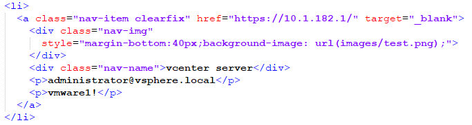

代理设置问题，访问浏览器设置地址：chrome://settings/，找到「系统」Chrome 使用的是由某款扩展程序指定的代理设置
打开Proxy SwitchyOmega，在不代理的地址列表中添加不经过代理连接地址，输入地址10.1.0.0/16，点击应用选项即可
添加完成后再次打开网站正常
导航站采用纯静态构建，使用SSH连接10.1.182.18主机后只需要改/var/www/html/index.html文件中的li代码块即可，li代码块结构如下：

仅需修改如下几个位置，分别对应了网站的几个关键信息：
修改https://10.1.182.1为对应网站的URL地址
修改images/test.png为对应网站的Logo地址（可以跳过）
修改vCenter Server为对应网站的名称
修改administrator@vsphere.local为对应网站的登录用户
修改vmware!为对应网站的登录密码
打开Chrome浏览器，访问浏览器设置地址：chrome://settings/
找到启动时设置，选择选择特定网页或一组网页，点击添加新网页，填写网址http://10.1.182.18/index.html，点击添加即可
DNS解析问题，win+R 打开运行 输入ncpa.cpl命令打开网络连接页面，右键「以太网」「属性」双击「Internet协议版本4」，填写备用DNS服务器地址为：10.1.182.2
注意：设置DNS时需要管理员权限！
如无法使用管理员权限进行设置DNS，可以采用手动编辑hosts文件的方法添加解析地址
10.1.182.2 dc1.vm.com
10.1.182.3 dc2.vm.com
10.1.182.4 psc.vm.com
10.1.182.5 vc1.vm.com
10.1.182.6 vc2.vm.com
10.1.182.7 vc3.vm.com
10.1.182.32 lab1-esxi-02.vm.com
10.1.182.33 lab1-esxi-03.vm.com
10.1.182.34 lab1-esxi-04.vm.com
10.1.182.35 lab1-esxi-05.vm.com
10.1.182.36 lab1-esxi-06.vm.com
10.1.182.37 lab1-esxi-07.vm.com
10.1.182.38 lab1-esxi-08.vm.com
10.1.182.50 vdi.vm.com
10.1.182.51 ConneSer-1.vm.com
10.1.182.52 ConneSer-2.vm.com
10.1.182.55 composerser.vm.com
10.1.182.60 vra.vm.com
大功告成，祝你使用愉快